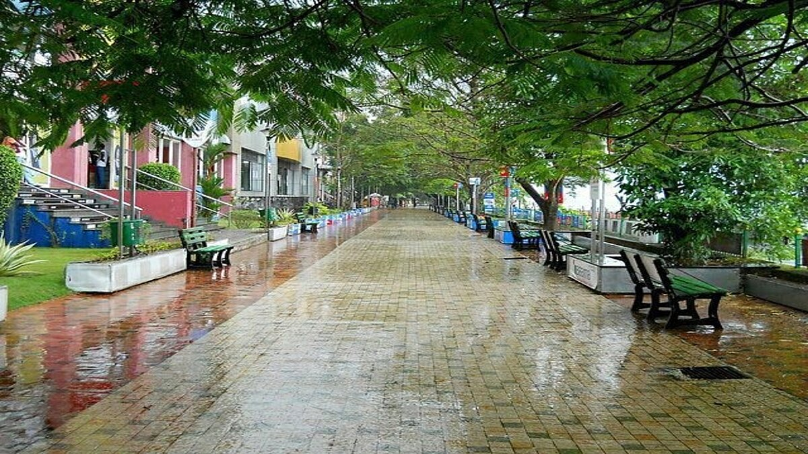
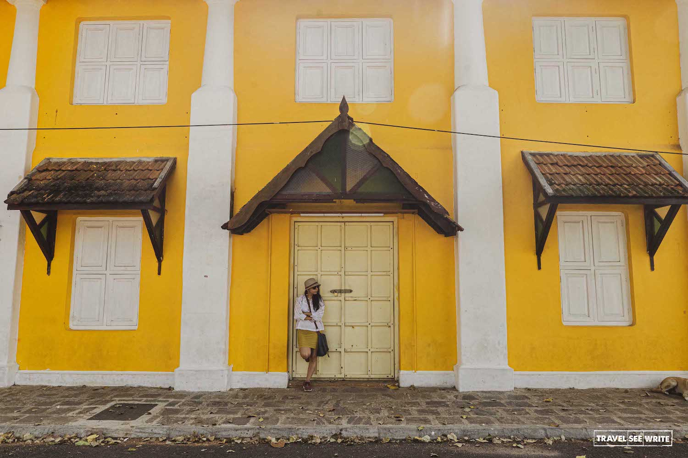
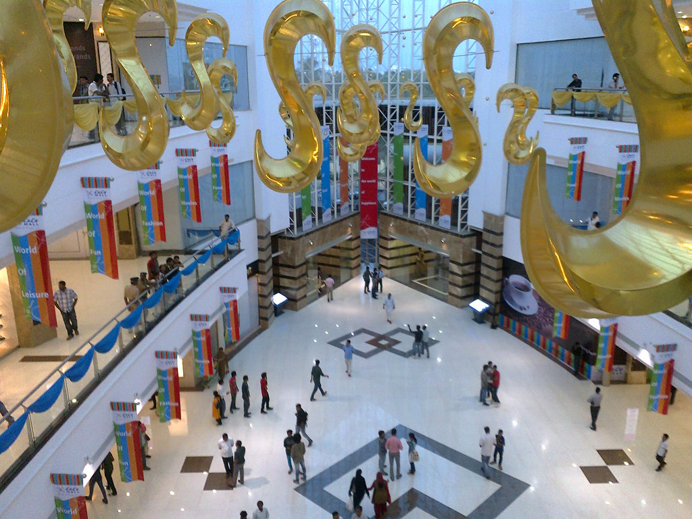
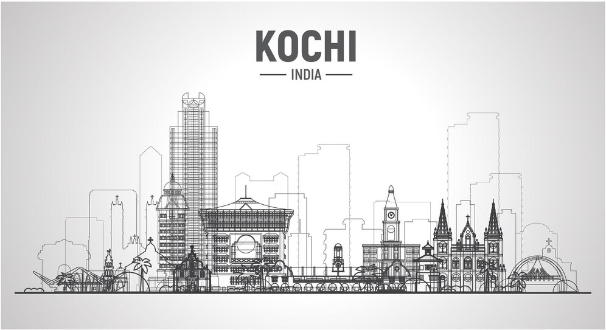

Houseboat Stay
Almost all the Cochin houseboat packages include Bolgatty Palace, Jew street, and fort Cochin. This area is rich in flora and fauna.

Marine Drive
It's one of the famous must-visit places for tourists and local populace. It's 140 m walkway that stretches from the Jankar Jetty

Fort Kochi
fishing village in the Kingdom of Kochi in the pre-colonial Kerala Whether it's a weekend getaway, a 3-4 day trip, or a honeymoon, Fort Kochi has something for everyone

Fishing
Chinese fishing nets colloquially known as Cheena vala is common sight in the backwaters of Kerala especially around Fort Kochi

Lulu Mall
It is the Second largest shopping mall in India in terms of total area. With an average daily footfall of more than 80,000, it is one of the most visited places in Kerala.
Kochi
Tours....
set against the jaw-dropping background of the vast Arabian Sea, Cochin is one of the calmest and composed cities in ‘God’s own country’ - Kerala.
Tourists travelling to this appealing city will find themselves lost in the undying beauty and charisma of the place that boasts of brackish lagoons, swaying coconut palms on shores, fanciful museums and churches. set against the jaw-dropping background of the vast Arabian Sea, Cochin is one of the calmest and composed cities in ‘God’s own country’ - Kerala.
Tourists travelling to this appealing city will find themselves lost in the undying beauty and charisma of the place that boasts of brackish lagoons, swaying coconut palms on shores, fanciful museums and churches.
Dubbed as the ‘Queen of the Arabian Sea’, Cochin is a destination for those seeking recuperation of the mind and body in the lap of nature. Go for Ayurvedic massages to relieve tension and leave behind all the worries of the world.Our amazing Cochin travel Packages help you plan a comfortable and safe vacation in the city. These cheap packages include accommodation, city tours, breakfast and airport transfers that are designed to meet your expectations in the best possible way. Capture the spellbinding beauty of cantilevered Chinese fishing nets suspended in the air against the fading rays of the sun in the evening. The tranquil settings are a treat for the eyes of every traveller. Walk down the Jew’s Street, famous for shops selling antique items and satisfy your hunger for antiques. By availing our packages for Cochin tours & travel, you get to taste every bit of this territory in a memorable way
Get in Touch!
explore a large collection of top rated Kochi holiday packages with itinerar.
Though you can plan your trip to Kochi anytime of the year

Explore kochi
Look for spicy dishes flavoured with tamarind and coconut in Kochi, and don’t be surprised if your dinner is served up on a banana leaf. The region is a major banana-growing area, and traditional Kochi cuisine employs the fruit in many dishes, both sweet and savoury. Coconut water provides a refreshing and sweet contrast to the piquant food.
Bolgatty Palace
₹4000.00
Fishing
₹3000.00

masanagudi vazhi ooty
₹5000.00
☰ 99 items in your cart
© copyright no one at all go to town